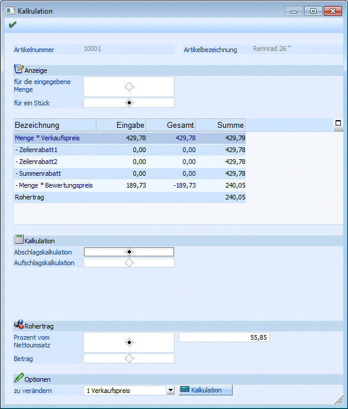

Die Artikel-Zeilenkalkulation kann optional bei der Belegerfassung bzw. im Telesales angezeigt werden. Durch Anklicken der Checkbox "Kalkulation" im Fenster Belegerfassen-Optionen wird das Fenster geöffnet. Die Einstellung, ob das Fenster angezeigt wird oder nicht, wird benutzerspezifisch gespeichert.

Bei jeder Neueingabe eines Artikels bzw. bei jedem Wechsel innerhalb von erfassten Artikelzeilen wird das Fenster "Kalkulation" mit dem gerade aktuellen Artikel aktualisiert.
Im Fenster Kalkulation werden alle wichtigen Informationen für die Preisfindung bzw. für die Rohertragskontrolle angezeigt.
Im Kopf des Fensters wird der gerade bearbeitete Artikel mit Artikelbezeichnung angezeigt.
Anzeige:
Ø für die eingegebene Menge
Ist diese Option aktiv, kann im nachstehenden Feld die Menge eingegeben werden, für die die Kalkulation durchgeführt werden soll.
Ø für ein Stück
Ist diese Option aktiv, erfolgt die Kalkulation immer nur für ein Stück.
In der Tabelle werden folgende Daten angezeigt bzw. können folgende Daten bearbeitet werden:
In der Spalte Bezeichnung wird die jeweilige "Rechenoperation" beschrieben. Diese kann nicht verändert werden.
Ø Menge * Verkaufspreis
- Zeilenrabatt 1
- Zeilenrabatt 2
- Summenrabatt
- Menge * Einstandspreis
= Rohertrag
In der Spalte Eingabe können individuelle Änderungen für jede Zeile (ausgenommen Rohertrag) vorgenommen werden. Achten Sie darauf, dass der Einstandspreis nur dann geändert werden kann, wenn auch die entsprechende Einstellung dazu in der Detailinfo der Erfassungszeile gesetzt wurde.
In der Spalte Gesamt wird immer der Gesamtwert der entsprechenden Zeile angezeigt. Dieser Wert wird immer neu gerechnet.
Ø Summe
In dieser Spalte wird die laufende Summe mitgerechnet. Hier ist dann auch der Gesamtrohertrag ersichtlich.
Kalkulation
Ø Abschlagskalkulation
Bei der Abschlagskalkulation wird ausgehend vom Verkaufspreis der Rohertrag ermittelt.
Ø Aufschlagskalkulation
Bei der Aufschlagskalkulation wird ausgehend vom Einstandspreis der Rohertrag ermittelt. Bei der Aufschlagskalkulation kann als Basis für die Berechnung Einstandspreis oder der festgeschriebene Einkaufspreis gewählt werden.
Achtung
Die Basis gilt immer nur für die Berechnung des Rohertrages. Der ermittelte Rohertrag selbst wird immer zum Einstandspreis dazugerechnet und ergibt dann den Verkaufspreis.
Rohertrag
Ø Prozent vom Einstandspreis
Hier wird der Rohertrag in Prozenten angezeigt und kann auch verändert werden.
Ø Betrag
Hier wird der Rohertrag angezeigt und kann auch verändert werden.
Aus der Auswahllistbox kann gewählt werden, welcher Wert durch die Kalkulation geändert werden soll. Zur Auswahl stehen der Verkaufspreis, der Zeilenrabatt 1 und 2 und der Summenrabatt.
Durch Anklicken des KALKULATION-Buttons werden die Werte neu gerechnet.
Durch Anklicken des OK-Buttons werden die aktuellen Werte in die Belegerfassung übernommen.